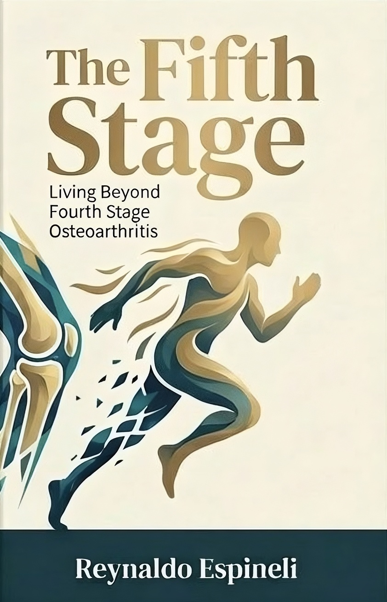

Living Beyond Fourth Stage Osteoarthritis
A diagnosis describes tissue. It does not describe possibility. One man's two-year journey from a "bone-on-bone" verdict back to a fully inhabited, moving life — without surgery, and without denial of medical reality.
Get the Foreword, Preface & Chapter One — Free Learn More
Enter your name and email below and the Foreword, Preface, and Chapter One will be sent to your inbox automatically, and you'll automatically join the Fifth Stage Community — receiving thoughtful updates, essays, and event invitations.
You'll receive the excerpt as a PDF, delivered automatically. Unsubscribe anytime.
If you're navigating advanced osteoarthritis — or treating it — and want clarity beyond the phrase “bone-on-bone,” this is where the conversation continues.
This is not a marketing list. It is a focused, thoughtful dialogue. Unsubscribe anytime.
For patients, clinicians, therapists, and movement professionals
Stage four is where medicine stops counting. In osteoarthritis it means end-stage degeneration — "bone-on-bone" — and the recommendation that joint replacement is the next step.
"Fourth stage osteoarthritis is not the end. It is a threshold. Beyond it lies a lived stage, the fifth stage, where degeneration remains, yet inhabitation widens."
When Reynaldo Espineli received this diagnosis, he assumed his active life was over. What followed instead was a careful, two-year functional recovery — not a cure, not a reversal of structural damage, but a profound reorganization of how his body moved within its limits.
Shaped by the precision and intelligent support of the Iyengar yoga tradition, The Fifth Stage illuminates the space between an MRI image and lived experience: the role of inflammation, protective reflexes, neuromuscular inhibition, and the quiet return of trust in movement.
The book does not reject surgery or promise structural reversal. It distinguishes structural diagnosis from functional destiny.
The "Fifth Stage" names what many clinicians witness but rarely articulate: when structural reality is fixed, but neuromuscular organization remains fluid.
The Event · The Misinterpretation · The Reorganization · The Nonlinearity · The Fifth Stage — plus a dedicated Note to Clinicians & Patients.
Featured coverage
The SCMP profiled Reynaldo's journey from a crippling fourth stage osteoarthritis diagnosis back to full mobility — and previewed The Fifth Stage, describing it as a deeply personal blueprint for outmanoeuvring a debilitating diagnosis and reclaiming a full, active life.
"Your joints might be degenerating, but your mobility does not have to."
Read the full article at scmp.com →
Explore SCMP's updated app and enjoy a 7-day free trial (new users only): Download now
Updates, events, and reflections on movement and recovery
The book and Reynaldo's recovery story were featured in the SCMP's Health & Wellness section, including photography on Hong Kong's Pottinger Street.
Read more →Details of the launch event will be announced to newsletter subscribers first.
Get notified →What imaging shows, what it doesn't, and why structural severity correlates imperfectly with pain and capacity.
Read the post →Questions, speaking inquiries, or press requests? Reach out directly — or join the newsletter to receive the free excerpt and future updates.
Email: fifthstage@espineli.com
Mail: P.O. Box 6829, Central Post Office, Hong Kong SAR
Get the Free Excerpt